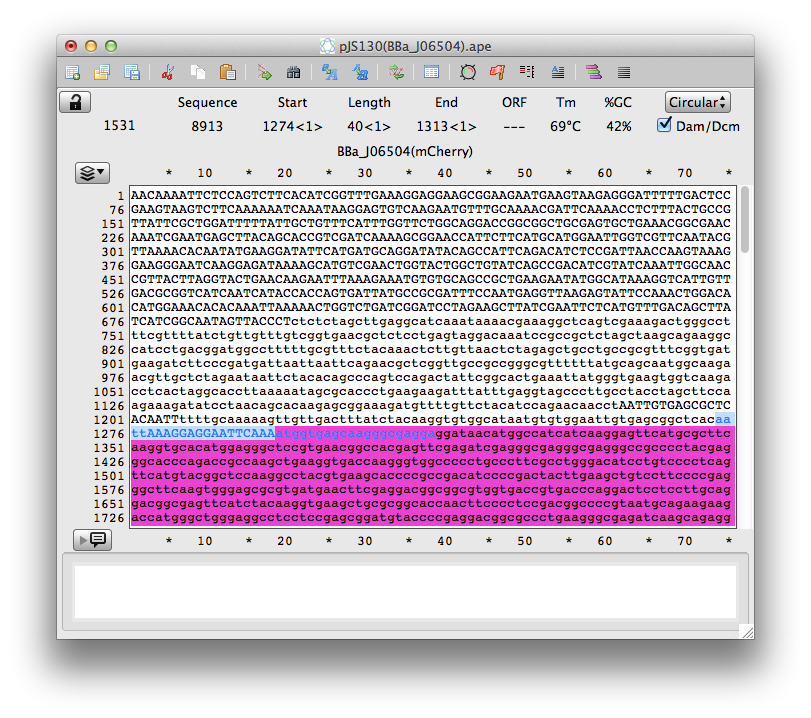

Workflow
Overview
This is a description of a typical DNA assembly workflow from designing goal sequences through to sequence verification. Navigate the workflow using the buttons in the flow diagram on the left.
The whole workflow is available as a download here.
Design Goal Sequence
Manual Design
A typical workflow:
- Create computer folder to contain sequence files.
- Identify source DNA sequences from:
- personal or laboratory sequence library
- public repository (e.g. GenBank, partsregistry)
- Download sequences in GenBank format (.gb, .gbk)
- Open DNA sequences in preferred nucleotide sequence editor e.g. ApE
- Using the GenBank format with a DNA sequence editor enables sequence annotations to be viewed and modified; this is particular useful for more complex designs.
- Create and name a new sequence file e.g. goalseq1.gb
- Cut and paste substrate sequences from source sequence files to the goal sequence file to form the goal sequence. Make custom changes to the goal sequence (e.g. codon optimisation).
- It is useful for primer design and future reference to ensure that assembly junctions are easily identified e.g. using coloured annotation to distinguish substrate DNA sequences.
Gibthon Construct Designer
Gibthon Construct Designer automates much of the process of designing constructs for Gibson Assembly. Firstly you will need to import the sequences you wish to design with. These may by imported from a GenBank (.gb, .gbk) file on your computer, the GenBank database itself, or the Registry of Standard Biological Parts. This will generate a library of parts for you to use.
Once the relevant parts have been uploaded to Gibthon, you canuse a simple drag-and-drop editor to design your desired construct, and procede to automated design of primers.
Design Primers
40 bp of complementary sequence at the termini of substate DNA sequences is sufficient for the Gibson assembly reaction. This can be achieved by adding 20 bp from adjacent substrate sequences.
Note: as little as 20 bp complementary sequence may be sufficient for assembly; this usually comes at a cost to efficiency
Example workflow:
Example workflow:- Take 60 bp around each junction between substrate sequences
- The target primer size will still be approximately 40 bp; starting with 60 bp facilitates optimization because potential secondary structures affecting a range of primers designs can be assessed simultaneously.
- The target primer size will still be approximately 40 bp; starting with 60 bp facilitates optimization because potential secondary structures affecting a range of primers designs can be assessed simultaneously.
- Analyse the 60 bp sequences e.g. using IDT’s OligoAnalyzer
- Optimize the primer sequences as per standard PCR (see guides for primer design for PCR for further tips). Note that it may be difficult and unnecessary to meet all desirable primer design criteria simultaneously.
- Parameters to consider optimising:
- Overlap length: Try to keep >15nt from each substrate sequence
- Melting temperature: Aim to match primer pair Tm values within 4 °C.
- Secondary structure: Make sure any hairpins have low Tm (typically less that 40 °C). Any hairpin with Tm over ~30 °C, should be >5bp from 3′ end or primers.
- Primer Dimers
- If any of the above parameters are unacceptable, then consider adjusting the following variables:
- Primer length
- Primer position relative to junction
- Parameters to consider optimising:
- Order primers
Gibthon Primer Design
Having designed your construct in the Gibthon Construct Designer, you will be able to automatically generate and design primers.
The primer design engine used by Gibthon scores primers on the following metrics:
- Melting temperature
- Mis-priming
- Self-priming
- Secondary structures
- Primer dimers
- Unique regions of homology
You will then be presented with an overview of the generated primers, along with the option to either fix manually or attempt to automatically fix any detected issues.
At the end of the process you will be given a datasheet for each primer, as well as protocols tailored to the specifications of the primers.
PCR Amplification
Use a high fidelity DNA polymerase such as NEB Phusion®.
Standard PCR Recipe
| Component | Final Concentration | Volume per reaction (μl) | Master Mix (μl for 10 reactions) |
|---|---|---|---|
| Nuclease-free water | 32.5 | 357.5 | |
| 5X Phusion HF or GC Buffer | 1X | 10 | 110 |
| 10mM dNTPs | 200 μM | 1 | 11 |
| 10 μM Forward Primer | 0.5 μM | 2.5 | |
| 10 μM Reverse Primer | 0.5 μM | 2.5 | |
| Template DNA | < 250 ng | 1 | |
| DMSO (optional) | 3% | ||
| Phusion DNA Polymerase | 1.0 units/50 μl PCR | 0.5 | 5.5 |
| Total | 50 | 484 |
GC Buffer can be used as standard buffer.
0.5X HF buffer yields more consistent results than 1X.
Standard PCR program
| Step | Temperature | Time |
|---|---|---|
| Denaturation | 98°C | 30 s |
| 30 cycles | 98°C | 15 s |
| 45-72°C* | 30 s | |
| 72°C | 45 s/kb | |
| Final Extension | 72°C | 8 minutes |
| Hold | 4°C | - |
*Annealing temperatures are typically 4°C lower than lowest primer Tm
The following parameters can be adjusted to optimize PCR efficiency and specificity (see the NEB protocol for further details):
Annealing temperature
[Mg]
Polymerase concentration
GC buffer
DMSO
Primers stocks can be used at 100 mM in sterile ddH2O.
For more controlled conditions, primers may be resuspended in 1:0.1 TE buffer pH 8.0 (1mM Tris, 0.1 mM EDTA)
Gel Purification
Gel purification is a convenient means of separating the desired products of PCR amplification from off-target amplicons and template DNA. Commercial kits for purification of PCR products from gel matrix are quick and easy to use, e.g. Qiagen QIAquick Gel Extraction Kit.
The below protocol for purification of PCR products is a modified version of the Qiagen protocol employing Qiagen QIAquick Gel Extraction Kit.
- Excise the DNA fragment from the agarose gel. DNA fragment can be excised from the gel with a scalpel or gel excision tips for more standard gel volumes. Place the excised gel fragment into a colorless tube. If it is not possible to continue immediately with step 2, the excised gel fragment can be stored in the fridge at 4 °C overnight.
- Add 3 volumes of Buffer QG to 1 volume of gel (100 mg ~ 100 μl). For >2% agarose gels, add 6 volumes of Buffer QG. The maximum amount of gel slice per QIAquick column is 400 mg.
- Incubate at 50°C for 10 min. Vortex every 3 minutes for faster dissolving of the gel fragment. Make sure that the gel fragment has dissolved completely. The color of the mixture after the gel fragment has dissolved completely should be yellow similar to the color of the Buffer QG, if the color is orange or violet adjust pH with 10 μl of 3 M sodium acetate, pH 5.0.
- Add 1 volume of isopropanol. This is important to increase yield of DNA fragments <500 bp and >4 kb.
- Apply the mixture to the QIAquick column placed in a provided 2 ml collection tube and centrifuge at 13000 RPM for 1 min. The maximum volume for one round of centrifugation is 800 μl. Reuse the same column for higher volumes.
- Discard flow-through and place QIAquick column back in the same collection tube.
- (Optional) Add 0.5ml of BufferQG toQIAquick column and centrifuge at 13000 RPM for 1 min. This removes residual agarose, which is important if the DNA will be used for direct sequencing, in vitro transcription, or microinjection.
- Add 0.75 ml of Buffer PE to QIAquick column and centrifuge at 13000 RPM for 1 min. (Recommended: let the Qiaquick column stand 2-5 min after addition of Buffer PE).
- Discard flow-through and centrifuge the QIAquick column at 13000 RPM for an additional 1 min.
- Place QIAquick column into a clean 1.5 ml microcentrifuge tube.
- To elute DNA from the QIAquick column, add 50 μl of the Buffer EB or ddH2O (pH 7.0-8.5) to the center of the column's membrane and centrifuge at 13000 RPM for 1 min. For increased DNA concentration, use 30-36 μl of the Buffer EB or ddH2O and let the column stand for 1-3 min before centrifugation.
- Gel bands can be efficiently excised using gel excision tips, this also results in standard gel volumes.
- Commercial kits for purification of PCR products from gel matrix are quick and easy to use, e.g. Qiagen QIAquick Gel Extraction Kit.
- The quality of purified DNA can be assessed using NanoDrop spectrophotometers. Ethanol precipitation or commercial clean-up kits can be use to further purify DNA.
Isothermal Assembly
Preparation
- 5X ISO Buffer
Components Quantity Units PEG-8000 0.25 0.5 1.5 g 1 M Tris-HCl pH 7.5 0.5 1 3 ml 2 M MgCl2 25 50 150 μl 100 mM dNTP mix 40 80 240 μl 1 M DTT 50 100 300 μl 100 mM NAD 50 100 300 μl dH2O to 0.335 0.67 2.01 ml Final volume 1 2 6 ml - Store at -20 °C in 320 μl aliquots.
- PEG stock solutions are difficult to measure out due to high viscosity. We recommend weighing PEG out in power form. Complete sterility is not essential as the 5X ISO Buffer and 1.33X Assembly Master Mix are stored frozen and the assembly reaction is performed at 50 °C.
- 1.33X Assembly Master Mix
Components Quantity Units 5X ISO Buffer 100 320 μl 10 U/ml T5 exonuclease* 0.2 0.64 μl 2 U/ml Phusion polymerase 6.25 20 μl 40 U/ml Taq ligase 50 160 μl dH2O 218.55 699.36 μl Total Volume 375 1200 μl *Optimised for 20-150 bp sequence homology overlaps.
- Measure the DNA concentration (ng/μl) of each assembly piece (optional)
Assembly
- Thaw 4 μl aliquot of Assembly Master Mix (AMM), keep on ice.
- Add assembly fragments to AMM to a final volume of 5.2 μl, e.g. 0.3 μl vector, 0.9 μl insert
The above rule of thumb is reliable; however, for more controlled conditions the concentrations of DNA fragments can be measured and combined as follows.
10-100 ng vector + X ng insert, where X equals:
- 5 x vector concentration for inserts of less than 300 bp
- 3 x vector concentration for inserts of 300-1000 bp
- 1 x vector concentration for inserts of 1000-3000 bp
- Incubate the assembly reaction at 50 °C for 60 minutes then place on ice.
- Transform Assembly Reaction into competent Escherichia coli, e.g. 5.2 μl Assembly Reaction to 100 μl competent cells.
The following factors have a significant impact in the efficiency of assembly.
- Ratio of purified DNA to Assembly Master Mix
4 μl AMM and 1.2 μl purified DNA usually results in 10-100 transformants. The ratio of AMM to purified DNA can be optimized for problem assemblies (15 μl AMM plus 5 μl DNA purified DNA is another common composition).
- DNA quality is important - check purity
- Competent cells
Poor competence of recipient E. coli cells is a common problem with DNA assembly protocols. Heat shock transformation of chemically competent cells, such as those prepared using the CCMB80 or TSS methods, has yielded consistently good results in many labs (10-100 colonies for the above protocol. For low efficiency reactions, electroporation can increase the transformation efficiency 10-fold.
- Ratio of purified DNA to Assembly Master Mix
Transformation
Chemically competent or electrocompetent cells prepared prior to transformation can be transformed by chemical transformation or electroporation, respectively.
Electroporation has higher transformation efficiency, while chemical transformation is faster and has a lower chance of errors.
This protocol has been adapted from the following protocol: http://openwetware.org/wiki/Bacterial_transformation
Preparation of chemically competent cells
- Prepare sterile-filtered CCMB80 buffer and store at 4 °C
- 10 mM KOAc pH 7.0 (10 ml of a 1M stock/L)
- 80 mM CaCl2.2H2O (11.8g/L)
- 20 mM MnCl2.4H2O (4.0g/L)
- 10 mM MgCl2.6H2O (2.0g/L)
- 10% glycerol (100ml/L)
- pH 6.4
- Pre-chill centrifuge and eppendorf tubes
- Innoculate 250 ml of SOB medium with cells and grow at 30 °C to an OD600 = 0.3
- Centrifuge, 3000 RPM, 10 min, 4 °C and discard supernatant
- Gently resuspend cells in 80 ml of ice cold CCMB80 buffer
- Incubate on ice for 20 min
- Centrifuge, 3000 RPM, 10 min, 4 °C and discard supernatant
- Gently resuspend cells in 10 ml of ice cold CCMB80 buffer
- Aliquot to pre-chilled eppendorf tubes and store at -80 °C
Transformation of chemically competent cells
- Thaw chemically competent cells on ice
- Pipette the whole volume of the prepared Gibson reaction mixture into the vial with competent cells
- Incubate on ice for 30 min
- Heat-shock, incubate at 42 °C for 30 sec
- Incubate cells on ice for 2 min
- Add 500-1ml SOC medium into the vial with cells
- Incubate at 37 °C for 1-1.5 hours on a rotatory shaker at 200 RPM
- Centrifuge, 5 min, 500 RPM
- Discard supernatant by decanting, thus leaving only c.a. 150 μl of the supernatant in the vials
- Resuspend cells in the reamining supernatant
- Plate 150 μl onto selective plates
- Grow overnight at 37 °C
- Flash-freeze prepared cells after aliquoting them
- Test competence of prepared cells by transforming them with 1 μl of pUC19 plasmid (Invitrogen). The transformation efficiency should be between 5x108 and 5x109 cfu/μgDNA, ca 100-400 colonies per plate.
- Thawing and refreezing competent cells significantly reduces transformation efficiency.
- Filter-sterilized TSS buffer can be used instead of CCMB80 buffer to make chemically competent cells. To prepare 50 ml of TSS buffer add 5g PEG 8000 (or PEG 3350), 1.5 mL 1M MgCl2 (or 0.30g MgCl2·6HO), 2.5 mL DMSO and LB to 50 ml, adjust pH to 6.5 and store at 4°C or -20°C.
- For a detailed protocol of preparation of electrocompetent cells and electroporation see http://openwetware.org/wiki/Bacterial_transformation.
Plasmid Purification
Commercial kits for plasmid isolation are quick and easy to use, e.g. Qiagen Qiaprep Spin Mini Kit.
The below protocol for plasmid isolation is a modified version of the Qiagen protocol employing Qiagen Qiaprep Spin Mini Kit.
- (Before start) Prepare Buffers P1 and PE. Add the provided RNase A solution to Buffer P1 to a final concentration 100 μg/ml, (Optional: Add the provided LyseBlue reagent to Buffer P1 for a final dilution of 1:1000). Store prepared Buffer P1 at 4°C. Add ethanol (96-100%) to Buffer PE. The required volume of ethanol is indicated on the bottle with PE buffer.
- Pick a single colony and inoculate 5 ml LB medium with the appropriate selective antibiotic and incubate overnight on a rotatory shaker.
- Pellet bacterial cells by centrifugation.
- Resuspend pelleted bacterial cells in 250 μl Buffer P1 in a microcentrifuge tube. Make sure bacteria are resuspended completely by pipetting up and down.
- Add 250 μl Buffer P2 and mix by inverting the tube 10 times. The bacterial suspension in the tube should become viscous and slightly clear. (The bacterial suspension in the tube should turn blue if LyseBlue has been added to Buffer P1 in the step 1).
- Add 350 μl Buffer N3 and mix by inverting the tube 10 times.The bacterial suspension in the tube should become cloudy. (The bacterial suspension in the tube should become colorless if LyseBlue has been added to Buffer P1 in the step 1).
- Centrifuge for 10 min at 13000 rpm.
- Transfer the supernatant to the QIAprep spin column by pipetting.
- Centrifuge at 13000 RPM for 1 min and discard the flow-through.
- (Recommended) Wash the QIAprep spin column with 0.5 ml Buffer PB. Centrifuge at 13000 RPM for 1 min and discard the flow-through.
- Wash the QIAprep spin column with 0.75ml Buffer PE. Centrifuge at 13000 RPM for 1 min and discard the flow-through.
- Remove residual wash buffer by centrifugation at 13000 RPM for 1 min.
- Transfer the QIAprep column in a clean 1.5 ml microcentrifuge tube.
- Add 50 μl Buffer EB (10 mM Tris·Cl, pH 8.5) or ddH2O on the membrane of the column, let stand for 1 min and centrifuge at 13000 RPM for 1 min.For increased DNA concentration, use 30-36 μl of the Buffer EB or ddH2O and let the column stand for 1-3 min before centrifugation.
Plasmid DNA can be further concentrated by ethanol precipitation
- add 1/10 volume of sodium acetate, pH 5.2 and mix
- add 2.5 volumes of cold 100% ethanol and mix
- incubate at -20°C for 45 min
- centrifuge at 13000RPM for 15 min
- discard supernatant
- add 1ml of 75% ethanol and mix
- centrifuge at 13000RPM for 1 min
- dry and resuspend pellet in the appropriate volume of ddH2O or TE buffer
Sequence Verification
Several companies provide sequencing services (e.g. Source BioScience). Follow the instructions on the webpage of the particular company for detailed instructions on how to prepare and ship your samples for sequencing. Brief instructions for sequencing services of Source BioScience are as follows:
- Register/ create account on the Source BioScience website. Follow the website of Source BioScience for detailed instructions on how to register.
- Transfer 6 μl of the isolated plasmid DNA to a clean 0.2 ml tube. For each sequencing reaction/sample prepare 6 μl of the plasmid DNA (e.g. for sequencing of the same DNA with 2 different primers, prepare 12 μl of the plasmid DNA).
- Transfer 10 μl of the 10 μM sequencing primer to a clean 0.2 ml tube. For each sequencing reaction/sample prepare 10 μl of the sequencing primer (e.g. for sequencing of two plasmids with the same primer prepare 20 μl of the sequencing primer).
- Place the online order for sequencing through the Source BioScience website.
- Ship your samples according to instructions on the Source BioScience website.
- Some companies such as Source BioScience provide sequencing primers for a number of standard vectors. Check the website for the selection of available primers.
- When preparing your own sequencing primer, design the primer 200 bp upstream of the sequence of interest, as the sequencing readout starts 200 bp downstream of the designed primer.
- Write the automatically generated order number displayed at the end of ordering online on the envelope with samples sent for sequencing.
- Sequencing files sent by the company can be compared by a number of software packages, such as web-based ClustalW